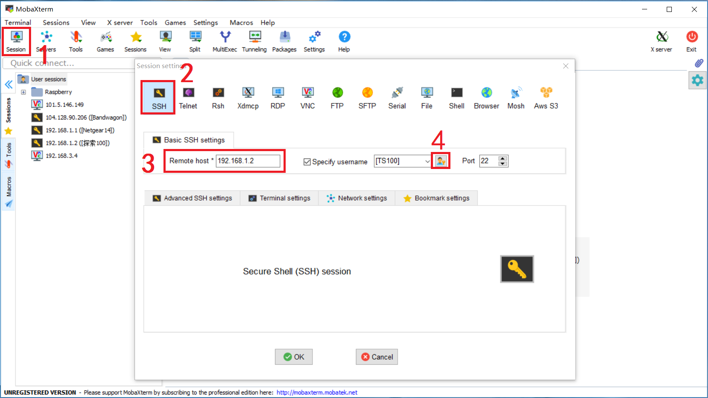
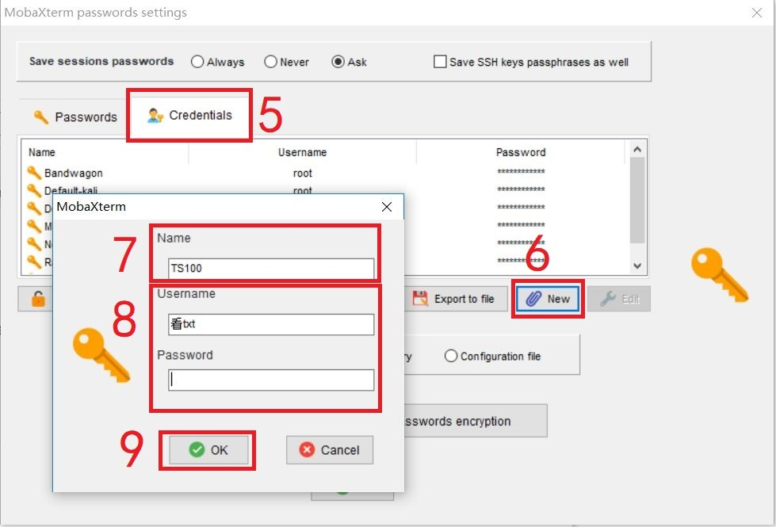

前言
关于课题组所租用的高性能计算平台“探索100”的使用将分为2个部分介绍，分别是“配置环境”（本文）和“日常使用”。本文将介绍如何配置登录和使用环境，成功配置以后就不用再看了；“日常使用”则作为平常运行计算时的参考，主治忘记了操作顺序，忘记了常用命令之类的问题。大体上，这两篇文章属于“照着操作能用”的指南，若需要更详细地了解硬件配置，运行过程等细节，可参考《探索100用户使用手册》等文件。
探索100服务器相比于个人计算机，优势在于核数多（740节点*12核=8880核），内存大（370个节点32GB，370个节点48GB），运行并行任务有显著的时间提升。因此我们在日常使用MCNP，Matlab，Geant，Talys等程序时，如果任务要求内存大，或者运行时间长，可以考虑使用探索100服务器加快计算。
整体思路
本文主要就两点内容：
- 下载SSH终端
- 配置连接
- 配置用户名和密码
- 配置密钥登录
下载SSH终端
- windows
常见的SSH终端有PuTTY（轻便简单），Xshell（久负盛名，功能丰富），MobaXterm（笔者在用，功能强大）等等。择一从官网下载即可。之所以我选择MobaXterm是因为其默认在打开ssh连接的同时打开sftp连接，可以让我们很方便地上传和下载文件。 - mac
直接使用terminal的SSH命令即可，我没有尝试过，欢迎了解的同学私信我添加这部分内容。 - Linux
直接使用terminal的SSH命令即可，我没有尝试过，欢迎了解的同学私信我添加这部分内容。
配置连接
下面以MobaXterm软件为例介绍如何配置用户名密码及密钥。
- 点击Session
- 点击SSH
- 输入远程主机ip
- 打开“MobaXterm password settings”页面
 - 点击“Credentials”
- 新建
- 输入Name（方便自己识别的名字，可以任意取）
- 输入用户名和密码（看课题组资料）
- 确定
 - 点击“OK”关闭“MobaXterm password settings”页面
- 勾选“Specify username”
- 下拉菜单
- 选择第7步设置的Name

- 打开“Advanced SSH settings”
- 勾选“Use private key”
- 选择私钥文件（课题组资料中的key文件）
- 确认

这时在主界面的左边栏会出现一个黑底黄钥匙的图标，代表一个ssh连接，此时双击它会报错“无法连接”，这是因为我们还没有连接“探索100”服务器的VPN，操作方法请看下一篇文章。